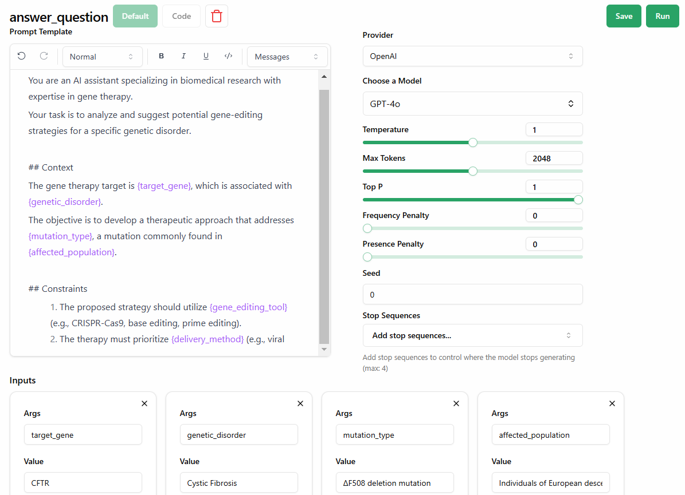
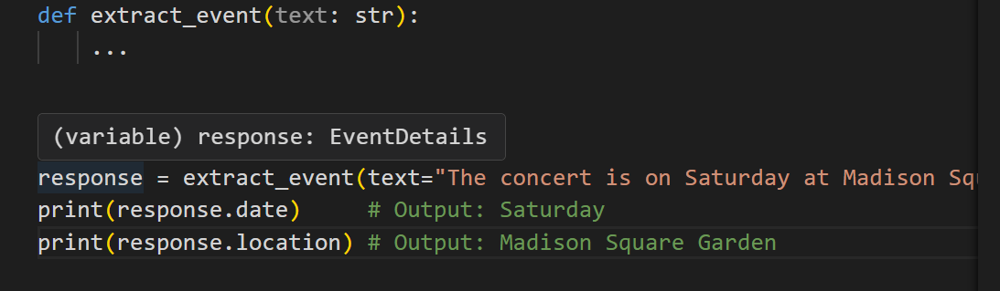
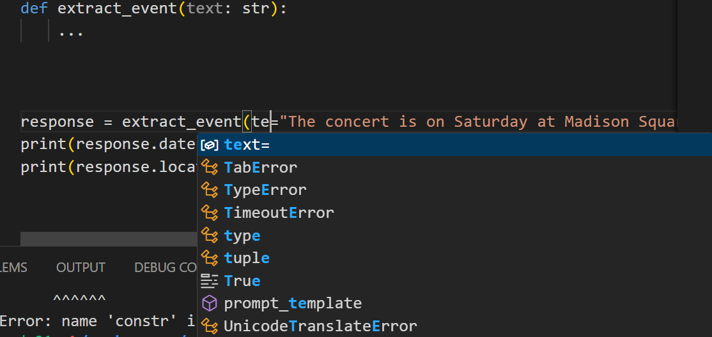

LLM Chaining: Techniques and Best Practices¶
LLM chaining is a technique in artificial intelligence for connecting multiple LLMs or their outputs to other applications, tools, and services to get the best responses or to do complex tasks.
Chaining lets applications do things like work with multiple files, refine content iteratively, and improve responses. It also overcomes some inherent limitations of LLMs themselves:
- They generally only accept up to a certain amount of information in one prompt (despite “context windows” getting larger all the time), and so connecting an LLM with a service to divide up long documents and feed these via several calls to the model can be very useful.
- They only remember what’s been said in a given conversation but not outside of it, unless you store the memory or state externally.
- They still generally only output their answers as text (e.g., prose, JSON, SQL code). But what if your application needs very specific outputs like a validated CSV file, flow chart, or knowledge graph?
This is why LLM chains are useful: they let you build sophisticated applications like LLM agents and retrieval augmented generation (RAG) systems that typically include:
- An input processing step, like preparing and formatting data that’ll be sent to the LLM — which often involves a prompt template.
- APIs enabling interaction with both LLMs and external services and applications.
- Language model output processing, such as parsing, validating, and formatting.
- Data retrieval from external data sources, such as fetching relevant embeddings from a vector database to enhance contextual understanding in LangChain RAG applications.
But putting together an LLM chain isn’t always straightforward, which is why orchestration frameworks like LangChain and LlamaIndex exist, though these have their own inefficiencies that we’ll discuss later on.
It’s for that reason we designed Mirascope, our developer-friendly, pythonic toolkit, to overcome shortcomings of modern frameworks.
Mirascope works together with Lilypad, our open source prompt observability platform that allows software developers to version, trace, and optimize language model calls, treating these as non-deterministic functions.
Below, we dive into techniques for chaining and discuss what to look for in an LLM chaining framework.
Prompt Chaining Techniques¶
Chaining prompts together has advantages over using lone prompts, especially since it provides more context and depth to inputs.
This in turn allows the language model to refine its understanding progressively and handle complex tasks in a structured, step-by-step way.
So rather than sending all the information at once and hoping for the best, the chain you design should break the prompt or task down into subtasks that in turn guide the model’s reasoning through intermediate steps.
For instance, this allows applications such as LLM as a judge to iteratively refine or validate responses based on predefined evaluation criteria.
While most people think of prompt chaining as a simple linear sequence of LLM calls (with the output of one being fed as input to the next) there are other ways of chaining as we see below:
Sequential Chains¶
This most common example of a prompt chain breaks down a complex task into a series of smaller, interconnected prompts that are executed in sequence, as already mentioned.
Executing a series of prompts as a linear sequence can be useful in scenarios where, for example, you want to:
- Generate itineraries by progressively addressing different aspects like flights, visits, and accommodations.
- Process long documents by breaking them into smaller chunks, performing summarization at each stage, and analyzing each sequentially.
- Create a comprehensive report by asking a series of questions and feeding the input to the next call with the response of the last.
A simple example of using a sequential approach to generate a B2B trend insights report in Python would be to start with identifying an expert in a particular industry (select_expert), followed by finding insights using that expert’s persona (identify_trend).
We show this below using Mirascope’s built-in declarative chaining:
# Sequential chain
from mirascope.core import llm, prompt_template
@llm.call(provider="openai", model="gpt-4o-mini")
@prompt_template("Name an expert known for insights on {industry} trends")
def select_expert(industry: str): ...
@llm.call(provider="openai", model="gpt-4o-mini")
@prompt_template(
"""
Imagine that you are {expert}, a renowned expert in {industry}.
Provide insights on a key {industry} trend related to {topic}.
"""
)
def identify_trend(industry: str, topic: str) -> openai.OpenAIDynamicConfig:
return {"computed_fields": {"expert": select_expert(industry)}}
print(identify_trend("AI", "automation"))
First, we call identify_trend to explore the topic of automation in the AI industry. Adding Mirascope’s llm.call decorator to a function (along with prompt_template) turns the function into an LLM API call that uses minimal boilerplate code.
Inside identify_trends, the computed_fields argument includes a call to select_expert, which calls the LLM first to get an expert’s name for the AI industry, and whose return value is then passed into a further LLM call by identify_trends.
Parallel Chains¶
Parallel chains involve executing multiple prompts simultaneously, often using the same input.
Sometimes this can be more efficient than other chaining techniques by reducing overall processing time. It’s particularly useful when:
- Time efficiency is important to your application, such as a customer service chatbot that processes sentiment analysis and query classification in parallel to minimize response time.
- Different aspects of a task can be processed independently, like a financial analysis tool running separate LLM calls for balance sheet evaluation and competitive analysis before merging insights.
- You need to generate multiple outputs based on the same input, such as in synthetic data generation for training AI models, where variations of data samples are created in parallel to improve model generalization and robustness.
(See our guide on synthetic data generation.)
For example, parallel chains are good for:
- Creating multiple pieces of content based on the same initial input
- Simultaneously gathering information or data from different sources or perspectives
- Tasks that require quick responses, such as in financial services (e.g., a lending platform assessing a borrower’s creditworthiness in real-time might simultaneously retrieve their credit score, look at market risk trends, and do other tasks)
Below, we show an example of a parallel chain using Python’s asyncio.gather() and Mirascope to optimize response times for identifying B2B trends and suggesting strategic moves based on industry insights.
We execute both identify_business_leader and identify_b2b_trends in parallel by running independent LLM API calls, and then generating a recommendation.
# Parallel chain
import asyncio
from mirascope.core import llm, prompt_template
@llm.call(provider="openai", model="gpt-4o-mini")
@prompt_template(
"""
Please identify a business leader who is well known for pioneering advancements in {industry}.
Respond only with the leader's name.
"""
)
async def identify_business_leader(industry: str): ...
@llm.call(provider="openai", model="gpt-4o-mini")
@prompt_template(
"""
Given the industry {industry}, return a list of emerging B2B trends.
Make sure to exclude general trends that apply to all industries, and respond only with the list.
"""
)
async def identify_b2b_trends(industry: str): ...
@llm.call(provider="openai", model="gpt-4o-mini")
@prompt_template(
"""
SYSTEM:
Your task is to recommend a strategic business move. Pretend that you are {leader}.
USER:
Given the following emerging B2B trends in the {industry} industry:
{trends}
Recommend a key strategic move that businesses in this space should consider.
"""
)
async def recommend_strategy(industry: str) -> openai.OpenAIDynamicConfig:
leader, trends = await asyncio.gather(
identify_business_leader(industry), identify_b2b_trends(industry)
)
return {
"computed_fields": {"leader": leader, "trends": trends}
}
async def recommend_strategy_parallel_chaining(industry: str):
return await recommend_strategy(industry=industry)
print(asyncio.run(recommend_strategy_parallel_chaining("fintech")))
Conditional Chains¶
Conditional chains incorporate “if-then” branching logic into a prompt chain to determine next steps based on previous responses, improving control over the model’s output and the overall interaction.
It’s generally useful for:
- Tasks with decision paths, like customer service automation
- Scenario-based problem solving where different approaches may be needed
- Creating flexible and responsive AI applications that can handle a wider range of inputs and scenarios
In customer support, a chatbot might troubleshoot an internet connectivity issue by first asking if the router is powered on, then branching into different solutions depending on whether the user confirms or denies connectivity, and finally escalating to a technician if the problem remains unresolved.
(See our article on how to make a chatbot.)
Below we implement a conditional prompt that determines whether a trend is emerging or declining, then analyzes this.
First, classify_trend determines whether the trend is emerging or declining using a predefined prompt. Based on this classification, analyze_trend generates a targeted analysis — either a growth opportunity analysis for emerging trends or a risk mitigation strategy for declining trends — by dynamically adjusting the prompt before passing it to the AI model.
# Conditional chain
from enum import Enum
from mirascope.core import openai, prompt_template
class TrendCategory(str, Enum):
EMERGING = "emerging"
DECLINING = "declining"
@llm.call(provider="openai", model="gpt-4o-mini", response_model=TrendCategory)
@prompt_template("Does the following market trend appear to be emerging or declining? {trend_description}")
def classify_trend(trend_description: str): ...
@llm.call(provider="openai", model="gpt-4o-mini")
@prompt_template(
"""
SYSTEM:
Your task is to analyze a B2B market trend.
The trend has been identified as {trend_category}.
USER: Provide a {trend_analysis_type} for the following trend: {trend_description}
"""
)
def analyze_trend(trend_description: str) -> openai.OpenAIDynamicConfig:
trend_category = classify_trend(trend_description)
trend_analysis_type = (
"growth opportunity analysis"
if trend_category == TrendCategory.EMERGING
else "risk mitigation strategy"
)
return {
"computed_fields": {
"trend_category": trend_category,
"trend_analysis_type": trend_analysis_type,
}
}
emerging_trend_analysis = analyze_trend(
trend_description="More enterprises are adopting AI-driven automation for workflow optimization."
)
print(emerging_trend_analysis)
# > This trend represents a significant growth opportunity as enterprises seek greater efficiency through AI-driven automation...
print(emerging_trend_analysis.user_message_param)
# > {'content': "Provide a growth opportunity analysis for the following trend: More enterprises are adopting AI-driven automation for workflow optimization.", 'role': 'user'}
declining_trend_analysis = analyze_trend(
trend_description="Traditional on-premise software solutions are being replaced by cloud-based SaaS offerings."
)
print(declining_trend_analysis)
# > This trend indicates a decline in demand for on-premise software, requiring businesses to adapt with cloud migration strategies...
print(declining_trend_analysis.user_message_param)
# > {'content': "Provide a risk mitigation strategy for the following trend: Traditional on-premise software solutions are being replaced by cloud-based SaaS offerings.", 'role': 'user'}
Iterative Chains¶
Also known as recursive chains, this is a technique where a prompt calls itself or another prompt in a loop-like structure.
It’s used for tasks that require repeated refinement or processing of text generation outputs, particularly when semantic consistency across iterations is important. This technique is good for:
- Optimizing or refining outputs through multiple passes
- Handling complex tasks that require step-by-step improvement
- Automating processes that need repeated evaluation or adjustment
Example scenarios include:
- Progressively improving a piece of writing by focusing on different aspects like grammar, style, or content in each iteration
- Fixing errors and then improving performance through multiple passes
- Verifying information and adding more details or lesser-known facts in subsequent iterations
- Generating ideas and then refining them by addressing challenges and developing more detailed plans
In the example below, summarize first generates a one-sentence summary of a B2B trends passage using an AI model. Then, resummarize critiques and refines the summary iteratively within the rewrite_iteratively function, which calls resummarize multiple times before returning the final improved version.
# Recursive chain
from pydantic import BaseModel, Field
from mirascope.core import llm, prompt_template
class SummaryFeedback(BaseModel):
"""Feedback on summary with a critique and review rewrite based on said critique."""
critique: str = Field(..., description="The critique of the summary.")
rewritten_summary: str = Field(
...,
description="A rewritten summary that takes the critique into account.",
)
@llm.call(provider="openai", model="gpt-4o-mini")
@prompt_template("Summarize the following text into one sentence: {original_text}")
def summarize(original_text: str): ...
@llm.call(provider="openai", model="gpt-4o-mini", response_model=SummaryFeedback)
@prompt_template(
"""
Original Text: {original_text}
Summary: {summary}
Critique the summary of the original text.
Then rewrite the summary based on the critique. It must be one sentence.
"""
)
def resummarize(original_text: str, summary: str): ...
def rewrite_iteratively(original_text: str, depth=2):
summary = summarize(original_text=original_text).content
for _ in range(depth):
feedback = resummarize(original_text=original_text, summary=summary)
summary = feedback.rewritten_summary
return summary
original_text = """
As digital transformation accelerates, B2B companies are increasingly leveraging AI-driven analytics,automation, and personalization to enhance decision-making and customer engagement.
Supply chain resilience has emerged as a top priority, with firms investing in predictive analytics and decentralized networks to mitigate disruptions. Additionally, the rise of account-based marketing (ABM)
and data-driven sales strategies is reshaping how businesses approach lead generation and relationship management.
Sustainability and ESG initiatives are also becoming central to corporate strategies, driven by regulatory pressures and customer expectations.
"""
print(rewrite_iteratively(original_text=original_text))
# > B2B companies are embracing AI-driven analytics, automation, and account-based marketing to enhance engagement,
# > while prioritizing supply chain resilience and sustainability in response to evolving market and regulatory demands.
Pros and Cons of Using an LLM Chaining Framework¶
As mentioned, libraries like LlamaIndex and Prompt Flow simplify chain development by offering pre-built components like prompt templates, chaining logic, and integrations with external APIs.
Below we discuss pros and cons of frameworks both in general and in the context of building LLM chains.
Advantages of Frameworks¶
Frameworks and SDKs save you time by taking care of lower-level tasks like managing the setup and error handling of API calls (e.g., writing HTTP requests or applying retry logic for failed API calls), and providing ready-made abstractions for tasks like chaining together components, allowing you to focus on higher-level logic.
In theory at least, combining such modules together as needed allows you to improve the scalability of your application by adding steps, natural language models, or tools.
Frameworks also support third-party integrations with databases, APIs, any type of knowledge base, platforms like Slack, and multiple LLMs.
Lastly, they offer components for session-specific or long-term memory to better manage retention of context across multiple interactions. Examples of these are vector stores, embeddings, or other abstractions for passing chat history messages into a chain.
Downsides of Frameworks¶
Frameworks might give you the necessary components to get started with chains but some users complain of their complexity.
This has two implications: the first is that some frameworks create their own abstractions that require a learning curve to master. The second is that some abstractions are opaque and do a lot under the hood and without you noticing, which renders them less suitable for production.
A case in point is LangChain expression language (LCEL) and particularly its runnable protocol that allows you to create and invoke custom chains. It’s designed to sequence tasks by taking the output of one call and feeding it as input to the next, handling concurrency with async methods.
This provides a standardized way for different components to interact: with a single function call you can execute a chain of operations by stringing together different components like calls and user inputs using the pipe operator:
While this works elegantly for simple operations, it’s not so suitable for complex chains and becomes quickly unmanageable and difficult to debug.
For instance, many runnables are composed of other runnables, increasing complexity and resulting in a high volume of LLM calls, which in turn leads to increased latency and excessive token usage.
While such abstractions have their good points, they’re also overengineered ways of accomplishing what you can do using vanilla Python, which we describe further below.
And once you start implementing them, it gets harder to make independent design choices later on, which limits flexibility.
4 Factors to Consider in a Framework¶
You should consider four main features when looking for a framework for building LLM chains:
1. Native Python Over Homegrown Abstractions¶
As we’ve seen earlier, some frameworks create their own abstractions that tend to cover as many use cases as possible and adopt a “one-size-fits-all” approach.
While this can be great for beginners learning about the space, it makes it harder to adapt the code to your own specific use cases and limits your flexibility and control. The more you use such features, the more dependent you become on the framework’s update cycle.
This dependency extends even to SDKs, as frameworks that are slow to react to SDK updates means you must similarly wait.
Pydantic is critical middleware for ensuring the integrity of prompts and model responses, and being locked into an outdated version can introduce compatibility issues and missed performance improvements.
When we designed Mirascope, we were careful to keep it as closely aligned with native Python as possible in order to accommodate updates in dependencies whenever these are released. Mirascope uses Pydantic V2, which brings improvements in performance, memory, and ease-of-use.
As a lightweight LLM toolkit, Mirascope allows you to selectively use its modules only when they’re required, rather than deciding for you how your implementations should look and locking you in to using more features than needed.
An example of how coding in the Python you already know results in efficient and readable logic is in prompt chaining.
Chaining prompts using computed fields means using dynamic configuration to include the output of a previous call as input in the next call.
This is a declarative and readable way to structure complex workflows, and ensures that dependencies are automatically resolved without requiring explicit execution management like with runnables.
In the prompt chain below, we use computed fields to automatically pass the recommended movie title from the first function (recommend_movie) as input to the second function (explain_movie), eliminating the need for manual intervention and ensuring a seamless, dynamic flow of information between prompts:
from mirascope.core import llm, prompt_template
@llm.call(provider="openai", model="gpt-4o-mini")
@prompt_template(
"""
Recommend a popular movie in the {genre} genre.
Give me just the title.
"""
)
def recommend_movie(genre: str): ...
@llm.call(provider="openai", model="gpt-4o-mini")
@prompt_template(
"""
SYSTEM:
You are the world's greatest film critic.
Your task is to explain why the movie "{movie_title}" is popular in the {genre} genre.
USER:
Explain why "{movie_title}" in the {genre} genre is popular.
"""
)
def explain_movie(genre: str) -> openai.OpenAIDynamicConfig:
return {"computed_fields": {"movie_title": recommend_movie(genre)}}
explanation = explain_movie("science fiction")
print(explanation)
# > "Inception," directed by Christopher Nolan, has achieved immense popularity in the science fiction genre...
Also, @computed_fields includes the output at every step of the chain in the final dump:
print(explanation.model_dump())
{
'metadata': {},
'response': {
'id': 'chatcmpl-B1E319PRZoX8pGIWkTb0YAF9i1zXe',
'choices': [{
'finish_reason': 'stop',
'index': 0,
'logprobs': None,
'message': {...,
'refusal': None,
'role': 'assistant',
'audio': None,
'function_call': None,
'tool_calls': None
}
}],
'created': 1739632027,
'model': 'gpt-4o-mini-2024-07-18',
'object': 'chat.completion',
'service_tier': 'default',
'system_fingerprint': 'fp_00428b782a',
'usage': {
'completion_tokens': 694,
'prompt_tokens': 54,
'total_tokens': 748,
'completion_tokens_details': {
'accepted_prediction_tokens': 0,
'audio_tokens': 0,
'reasoning_tokens': 0,
'rejected_prediction_tokens': 0
},
'prompt_tokens_details': {
'audio_tokens': 0,
'cached_tokens': 0
}
}
},
'tool_types': None,
'prompt_template': '\n SYSTEM:\n You are the world\'s greatest film critic.\n Your task is to explain why the movie "{movie_title}" is popular in the {genre} genre.\n\n USER:\n Explain why "{movie_title}" in the {genre} genre is popular.\n ',
'fn_args': {
'genre': 'science fiction',
'movie_title': {
'metadata': {},
'response': {
'id': 'chatcmpl-B1E31fVXIScxUvuzJ45ohASipgi2b',
'choices': [{
'finish_reason': 'stop',
'index': 0,
'logprobs': None,
'message': {
'content': 'Inception',
'refusal': None,
'role': 'assistant',
'audio': None,
'function_call': None,
'tool_calls': None
}
}],
'created': 1739632027,
'model': 'gpt-4o-mini-2024-07-18',
'object': 'chat.completion',
'service_tier': 'default',
'system_fingerprint': 'fp_13eed4fce1',
'usage': {
'completion_tokens': 3,
'prompt_tokens': 23,
'total_tokens': 26,
'completion_tokens_details': {
'accepted_prediction_tokens': 0,
'audio_tokens': 0,
'reasoning_tokens': 0,
'rejected_prediction_tokens': 0
},
'prompt_tokens_details': {
'audio_tokens': 0,
'cached_tokens': 0
}
}
},
'tool_types': None,
'prompt_template': '\n Recommend a popular movie in the {genre} genre.\n Give me just the title.\n ',
'fn_args': {
'genre': 'science fiction'
},
'dynamic_config': None,
'messages': [{
'role': 'user',
'content': 'Recommend a popular movie in the science fiction genre.\nGive me just the title.'
}],
'call_params': {},
'call_kwargs': {
'model': 'gpt-4o-mini',
'messages': [{
'role': 'user',
'content': 'Recommend a popular movie in the science fiction genre.\nGive me just the title.'
}]
},
'user_message_param': {
'content': 'Recommend a popular movie in the science fiction genre.\nGive me just the title.',
'role': 'user'
},
'start_time': 1739632027273.4211,
'end_time': 1739632027643.734,
'message_param': {
'content': 'Inception',
'refusal': None,
'role': 'assistant',
'tool_calls': None
},
'tools': None,
'tool': None,
'audio': None,
'audio_transcript': None
}
},
'dynamic_config': {
'computed_fields': {
'movie_title': {
'metadata': {},
'response': {
'id': 'chatcmpl-B1E31fVXIScxUvuzJ45ohASipgi2b',
'choices': [{
'finish_reason': 'stop',
'index': 0,
'logprobs': None,
'message': {
'content': 'Inception',
'refusal': None,
'role': 'assistant',
'audio': None,
'function_call': None,
'tool_calls': None
}
}],
'created': 1739632027,
'model': 'gpt-4o-mini-2024-07-18',
'object': 'chat.completion',
'service_tier': 'default',
'system_fingerprint': 'fp_13eed4fce1',
'usage': {
'completion_tokens': 3,
'prompt_tokens': 23,
'total_tokens': 26,
'completion_tokens_details': {
'accepted_prediction_tokens': 0,
'audio_tokens': 0,
'reasoning_tokens': 0,
'rejected_prediction_tokens': 0
},
'prompt_tokens_details': {
'audio_tokens': 0,
'cached_tokens': 0
}
}
},
'tool_types': None,
'prompt_template': '\n Recommend a popular movie in the {genre} genre.\n Give me just the title.\n ',
'fn_args': {
'genre': 'science fiction'
},
'dynamic_config': None,
'messages': [{
'role': 'user',
'content': 'Recommend a popular movie in the science fiction genre.\nGive me just the title.'
}],
'call_params': {},
'call_kwargs': {
'model': 'gpt-4o-mini',
'messages': [{
'role': 'user',
'content': 'Recommend a popular movie in the science fiction genre.\nGive me just the title.'
}]
},
'user_message_param': {
'content': 'Recommend a popular movie in the science fiction genre.\nGive me just the title.',
'role': 'user'
},
'start_time': 1739632027273.4211,
'end_time': 1739632027643.734,
'message_param': {
'content': 'Inception',
'refusal': None,
'role': 'assistant',
'tool_calls': None
},
'tools': None,
'tool': None,
'audio': None,
'audio_transcript': None
}
}
},
'messages': [{
'role': 'system',
'content': 'You are the world\'s greatest film critic.\n Your task is to explain why the movie "Inception" is popular in the science fiction genre.'
}, {
'role': 'user',
'content': 'Explain why "Inception" in the science fiction genre is popular.'
}],
'call_params': {},
'call_kwargs': {
'model': 'gpt-4o-mini',
'messages': [{
'role': 'system',
'content': 'You are the world\'s greatest film critic.\n Your task is to explain why the movie "Inception" is popular in the science fiction genre.'
}, {
'role': 'user',
'content': 'Explain why "Inception" in the science fiction genre is popular.'
}]
},
'user_message_param': {
'content': 'Explain why "Inception" in the science fiction genre is popular.',
'role': 'user'
},
'start_time': 1739632027649.208,
'end_time': 1739632043802.302,
'message_param': {
'content': '..',
'refusal': None,
'role': 'assistant',
'tool_calls': None
},
'tools': None,
'tool': None,
'audio': None,
'audio_transcript': None
}
Mirascope’s native Python approach removes the need for extra classes and abstractions to pass information through a chain — you simply access and use data naturally, just as Python intends.
2. Automated Version Control and Tracking¶
Tracking changes in your prompt experiments helps manage the complexity of developing LLM chains. When working with an LLM service, versioning prompts ensure that iterative improvements are traceable and reproducible across different models and updates.
We discovered this the hard way when working with the first versions of OpenAI’s SDK — our prompts became unmanageable after just a couple of versions because we hadn’t set up a structured prompt management workflow.
This made prompt management a manual, cumbersome process, since we decided that the safest option was for only one person to make the changes.
We believe version control should be as effortless as possible and run in the background so you can focus on experimentation. Every call to an LLM should be traced to capture the full context around LLM calls and gain insights into inputs, outputs, and costs.
In the end, prompt engineering can be seen as the optimization of non-deterministic functions (LLM calls) through structured experimentation. You need to continuously tweak parameters (in this case, prompts and function bodies) and measure their impact, since outputs can be random and inconsistent.
To keep track of all this, we developed Lilypad, an open source prompt engineering framework that automatically versions and traces LLM calls when you simply add the @lilypad.generation decorator, ensuring that evaluations are systematic and reproducible:
import lilypad
from openai import OpenAI
client = OpenAI()
@lilypad.generation()
def answer_question(question: str) -> str:
completion = client.chat.completions.create(
model="gpt-4o-mini",
messages=[{"role": "user", "content": question}],
)
return str(completion.choices[0].message.content)
if __name__ == "__main__":
lilypad.configure()
answer = answer_question("What is the meaning of life?")
print(answer)
The decorator also ensures that every time answer_question is modified, it gets a new version automatically, making it easier to track changes and compare outputs over time. This includes:
- The input question sent to the model
- The output response from the LLM
- Model metadata, including the number of tokens used, latency, and cost
The Lilypad Playground allows non-technical users, such as domain experts, to interact with prompts without needing to alter the underlying code, effectively separating concerns and allowing software engineers to focus only on the underlying system architecture, API integrations, and data handling:

3. Provider-Agnostic LLM Calls¶
Just as avoiding dependency on a framework’s update cycle — like waiting for LangChain to update when the OpenAI SDK changes — allows you to adopt improvements without delay, avoiding vendor lock-in gives you the ability to switch between LLM providers without extensive code rewriting.
Mirascope’s llm.call decorator allows you to quickly change providers in LLM calls by specifying the provider name in the argument list. This flexibility ensures that your application remains adaptable, allowing you to switch to a different model endpoint as needed.
Also, Mirascope's native Python interface lets you integrate models and functionality that may not yet be supported natively by Mirascope, either through provider-specific decorators or by using the provider’s SDK/API directly. This means you can seamlessly mix and match different LLMs — including the latest releases from providers like OpenAI — without being restricted by framework limitations.
Below we show an example of using llm.call and Mirascope’s override_response, which allows you to override provider settings at runtime:
from mirascope import llm
@llm.call(provider="openai", model="gpt-4o-mini")
def recommend_book(genre: str) -> str:
return f"Recommend a {genre} book"
response = recommend_book("fantasy")
print(response.content)
override_response = llm.override(
recommend_book,
provider="anthropic",
model="claude-3-5-sonnet-20240620",
call_params={"temperature": 0.7},
)("fantasy")
print(override_response.content)
Note the provider and model arguments in llm.call, which allows hot switching of providers when needed. You can also override provider settings at runtime using llm.override, which takes a function decorated with llm.call and change:
provider: change the provider being calledmodel: use a different modelcall_params: override call parameters like temperatureclient: use a different client instance
Taken altogether, Mirascope’s provider-agnostic LLM calling allows you to:
- Write reusable code for any provider
- Switch providers at runtime when you need to test different models or configurations in real-time, implement automatic fallbacks if a provider is down or underperforming, etc.
- Adjust model parameters when needed to optimize outputs
- Switch to more cost-effective models depending on workload or use case without redeploying code
- Use different large language models for different tasks within the same application
- Work with standardized response types through a consistent interface for all providers
4. Validated LLM Outputs¶
Structuring and validating outputs of generative AI models is important for LLM integration, and ensures consistent formatting and accuracy from one step of the chain to the next.
Ensuring that an LLM operates on a well-defined dataset improves its ability to generate structured, reliable responses, as well as the user experience.
This allows better integration with other systems and is essential for putting together complex AI systems that combine different tools and services.
But many chaining frameworks don’t come with output validation out-of-the-box and require you to write custom boilerplate for this.
Mirascope’s built-in response_model uses Pydantic’s Base Model class to structure and validate LLM outputs.
It works by allowing you to define a Pydantic schema against which Mirascope automatically parses and validates outputs to enforce type safety.
The code below shows an example of using a response model.
- We define
EventDetailsas a PydanticBaseModelto ensure the extracted event details include adateandlocationwith validated date types. - We then include the
response_modelargument in thellm.calldecorator.
from pydantic import BaseModel
from mirascope.core import llm, prompt_template
class EventDetails(BaseModel):
date: str
location: str
@llm.call(
provider="openai",
model="gpt-4o-mini",
response_model=EventDetails,
)
@prompt_template("Extract the event details from this text: {text}")
def extract_event(text: str):
...
response = extract_event(text="The concert is on Saturday at Madison Square Garden.")
print(response.date) # Output: Saturday
print(response.location) # Output: Madison Square Garden
Pydantic’s type annotations support features like autocomplete, type hints, and linting directly in your IDE. For example, you can confirm function return types just by hovering your cursor over certain variables:

It also shows autosuggestions:

Write Clean AI Pipelines That Are Easy to Maintain¶
Mirascope’s lightweight Python toolkit lets you build scalable AI-powered chains while giving you the freedom to use only the components you need — no rigid frameworks, just modular flexibility.
You can easily get started by exploring our examples and guides on both our documentation pages and on GitHub.